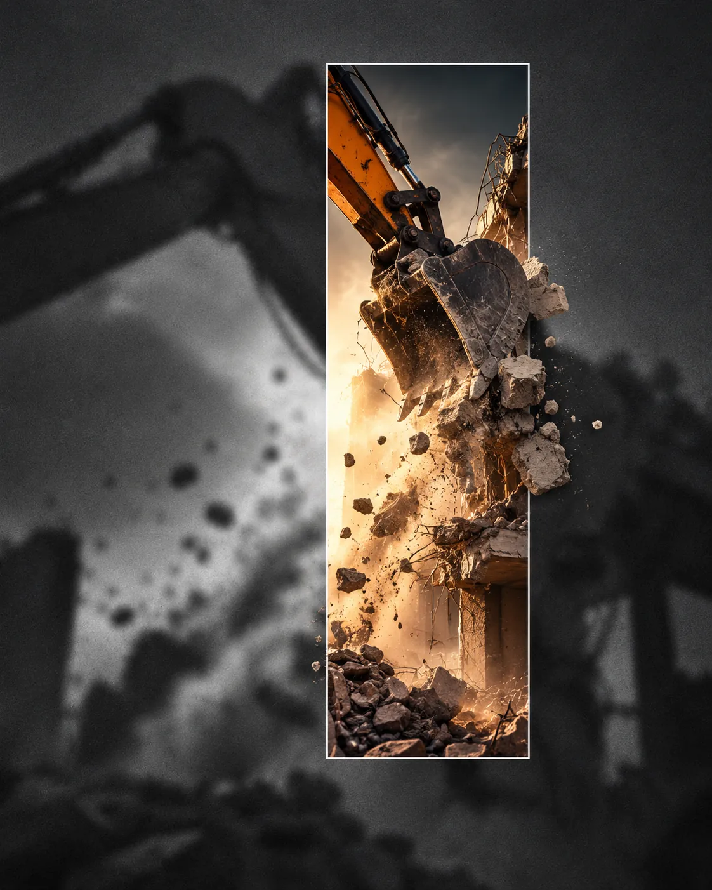
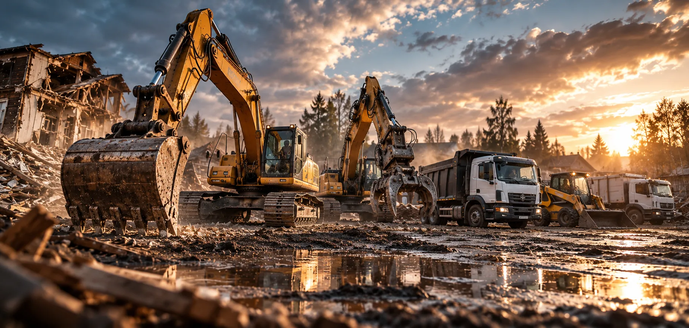

01 /
Конкретный объём
Разделяем снос, фундамент, погрузку и вывоз. Понятно, что включено в расчёт.
Сносим деревянные дома и постройки в Истринском округе. Техника, погрузка и вывоз — от первого разговора до освобождения участка.
Демонтаж начинается не с удара ковша, а с понимания задачи. Что убираем? Что сохраняем? Как подъехать к строению? Куда уйдут строительные отходы?
Мы строим структуру работ вокруг этих вопросов — чтобы заказчик понимал, из чего складываются объём, сроки и смета.
Как устроен процессРазделяем снос, фундамент, погрузку и вывоз. Понятно, что включено в расчёт.
Учитываем проезд, деревья, соседние строения и конструкции, которые важно сохранить.
Результат обсуждаем заранее: от разобранного строения до расчистки территории.

От небольшого сарая до старого дома — подбираем подход под материал, конструкцию и ограничения участка.
Деревянные, каркасные и кирпичные строения.
Бани, сауны и старые пристройки.
Сараи, гаражи, беседки и пристройки.
Ленты, плиты и бетонные основания.
Перегородки, отделка, полы.
Погрузка, сортировка, расчистка.
От удара ковша до последней погрузки — показываем масштаб, технику и детали. Без однотипных карточек и лишнего декора.





Иллюстративные сцены, а не фотографии выполненных заказов DomPogrom.
Поэтапная схема помогает согласовать задачу и избежать разночтений.
Тип строения, примерная площадь, расположение, фотографии и цель демонтажа.
Уточняем условия доступа, конструкцию, коммуникации и сохраняемые объекты.
Определяем границы демонтажа, состав операций, вывоз, сроки и условия.
Работы выполняются по согласованной технологии с учётом безопасности.
Убираем и вывозим отходы в том объёме, который указан в договорённостях.

Обсуждаем возможность подъезда, погрузку и объём вывоза заранее. Так проще понять, что действительно потребуется для вашего участка.
Погрузка и вывоз ↗Портфолио организовано так, чтобы показывать исходные условия, этапы и результат. Подтверждённые кейсы добавляются после получения материалов.
Визуальный концепт Иллюстрация / не объект компании
Иллюстрация / не объект компанииСначала фото, расположение и доступ. Затем обсуждаем технику и состав работ.
Опишите строение и условия. Составим перечень работ, которые нужно оценить до начала демонтажа.
Перейти к оценке